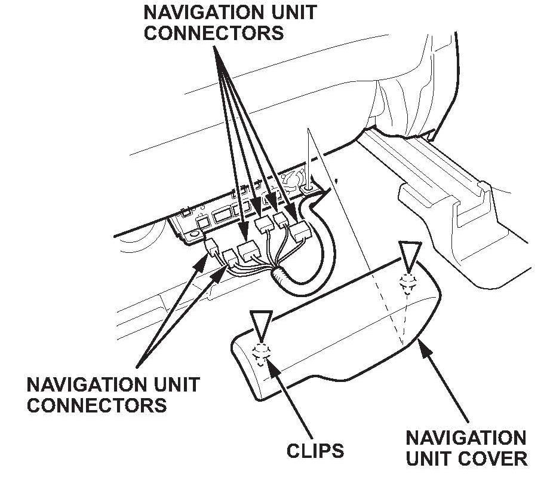

Restraints - SRS Indicator ON With DTC 71-11
11-023August 6, 2011
Applies To:
2007-09 MDX - ALL
SRS Indicator Is On with DTC 71-11
SYMPTOM
The SRS indicator is on with DIG 71-11 (open in driver's seat position sensor).
PROBABLE CAUSE
The driver's seat wire harness has an open circuit.
CORRECTIVE ACTION
Replace the driver's seat wire harness.
PARTS INFORMATION
Driver's Seat Wire Harness: P/N 81606-STX-A01
WARRANTY CLAIM INFORMATION
The normal warranty applies.
Operation Number: 7371L0
Flat Rate Time: 0.8 hour
Failed Part: P/N 81 606-STX-A00
Defect Code: 06801
Symptom Code: 03205
Skill Level: Repair Technician
REPAIR PROCEDURE
1. Tilt the steering wheel all the way up, and push it all the way in.
2. Slide the driver's seat all the way forward, and adjust the seat to its maximum height. Carefully pry up on the bottom of the anchor cover to release the tab, then remove it.
3. Adjust the seat to its minimum height, then remove the lower anchor bolt.

4. With navigation: Gently pull the navigation unit cover up to detach the clips, then remove the cover.
5. With navigation: Disconnect the navigation unit connectors.
6. Slide the seat all the way forward, and remove the inner and outer rear seat track end covers.
7. Remove the rear seat mounting bolts.

8. Slide the seat all the way back, and remove the inner and outer front seat track end covers.
9. Remove the front seat mounting bolts.
10. Do the battery terminal disconnection procedure, and wait at least 3 minutes before removing the seat.
11. Lift up the driver's seat, then disconnect the power seat harness connector and the side airbag connector.
12. Remove the head restraint.
13. With the help of an assistant, carefully remove the seat.
14. With navigation: Remove the navigation unit (two screws).
15. With the seat on a flat bench, remove the three screws, release the hook and the tabs, then remove the front cover.
16. Remove the recline cover:
^ Remove the screw, and detach the clip and hooks.
^ Pull the cover up, then disconnect the two connectors.
17. Remove the driver's seat wire harness (16 connectors, 12 clips, and 3 wire ties).
18. Install the new driver's seat wire harness (16 connectors, 12 clips, and 3 wire ties).
19. With navigation: Reinstall the navigation unit.
20. Reconnect the recline cover connectors, and reinstall the recline cover.
21. Reinstall the front cover.
22. With the help of an assistant, carefully place the seat back in the vehicle.
23. Reinstall the head restraint, and reconnect the power seat connector and side airbag connector.
24. Reinstall the driver's seat mounting bolts, and torque them to 47 N.m (35 lb-ft).
25. Reinstall the seat track end covers.
26. With navigation: Reinstall the navigation unit cover.
27. Reinstall the lower anchor bolt, and torque it to 32 N.m (24 lb-ft).
28. Reinstall the anchor cover.
29. Do the battery terminal reconnection procedure.
30. Clear the DTC with the HDS.

Disclaimer